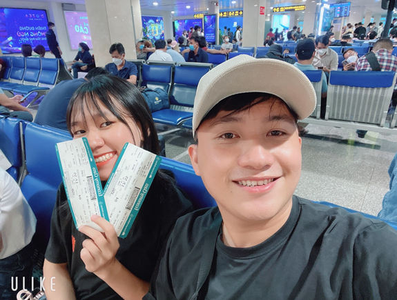
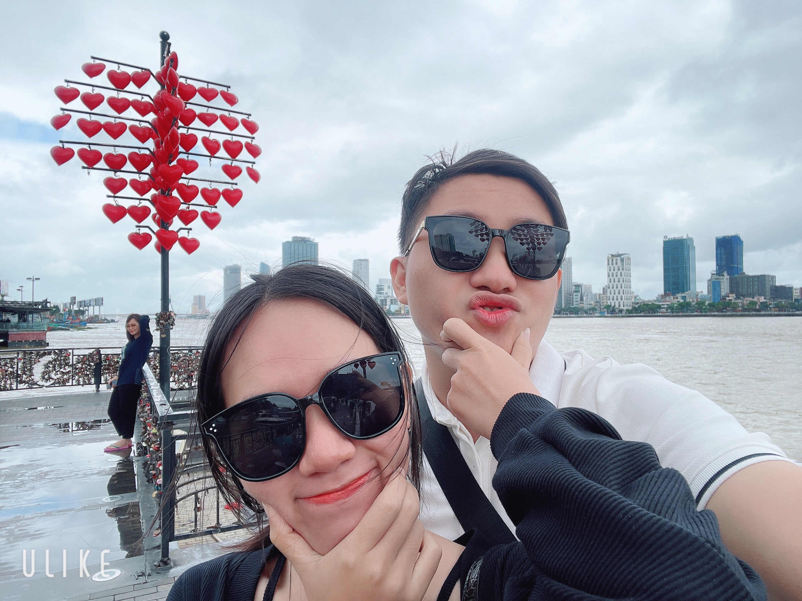

Chúc mừng bạn đã nhận được phần quà của chúng mình!

Hãy kéo xuống để xem chi tiết phần quà này nhé hihi!
Hello em! Đây là món quà nho nhỏ mà anh đã chuẩn bị cho em!
Ngày 10/10/2018: Là ngày đầu tiên mà em nói “Em thích Anh”. Anh vui lắm, Hãy cùng anh xem lại những kỉ niệm của mình nhé!

Vui là vì lần đầu được đi máy bay
Hạnh phúc là vì được đi cùng em
Hơi buồn một tí là hôm đi là ngoài Quảng Nam bão
Hồi hộp là vì sắp phải ra mắt bên gia đình em
Cầu Rồng Đà Nẵng nheee!
Tưởng là không được đi vì trời mưa. Nhưng em biết anh chưa 1 lần ra đây nên em chiều anh để cho anh biết là Đà Nẵng như thế nào. Cảm ơn Em!
A thấy ĐN cũng không có gì đặc biệt với anh, nhưng đặc biệt nhất của anh là được đi cùng Em
Sau 3 năm, không tính những lần chia tay thì đây không phải là thời gian ngắn mà cũng không phải là dài. Sau đây a có 3 điều muốn nói với em
- Điều đầu tiên: Anh cảm ơn em, vì em đã đến bên anh, chăm sóc và san sẻ với anh về những chuyện vui cũng như là chuyện buồn.
- Điều Thứ hai, anh xin lỗi em Vì: Anh không nhớ là anh đã nói câu “Mình chia tay đi” bao nhiêu lần nữa, đã khiến cho em buồn, cho em khóc và làm cho em gầy đi rất nhiều Có những lần anh to tiếng hay khó chịu với em hay là quát em. Cũng có đôi lúc anh chỉ nghĩ cho bản thân mình mà không để ý cảm xúc của em, làm cho em phải chịu đựng, khó chịu và buồn bã
- Điều thứ 3: Anh biết, hiện tại anh và em chưa có gì trong tay từ tiền bạc đến vật chất Mình cũng còn trẻ, chưa được trải nghiệm nhiều về mọi thứ từ ăn uống, mua sắm kể cả đi du lịch Nhưng, Anh sẽ cố gắng chỉnh đốn mình để trưởng thành hơn để còn chăm sóc và bảo vệ cô gái mà anh yêu.
Anh cũng sẽ để em không phải buồn không phải khóc vì anh nữa.
Em cũng đừng lo nữa vì mọi thứ cứ để anh lo, và hơn hết anh muốn mỗi ngày thức dậy sẽ được trực tiếp gọi em dậy và trao cho em một nụ hôn.
Một lần nữa, anh xin cảm ơn và xin lỗi em! Yêu em!
Thứ 7 ngày 16 tháng 4 năm 2022.